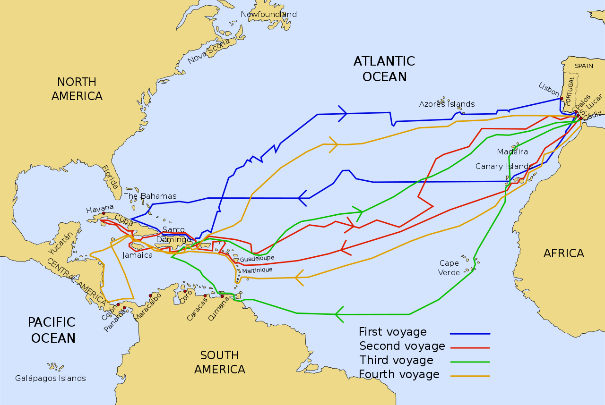
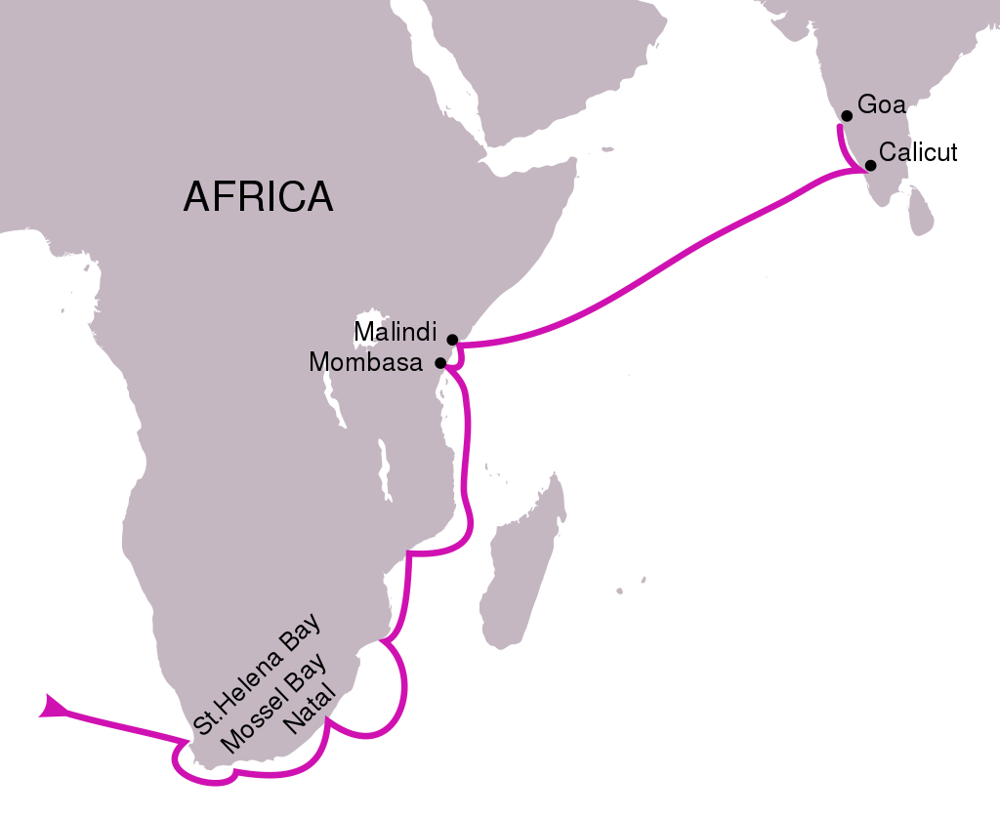
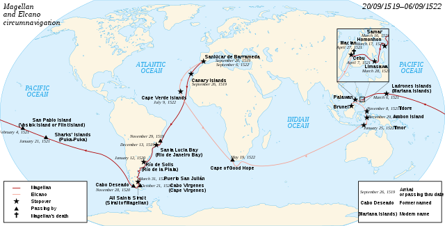

Великите открития през периода на Ренесанса и след него промениха света и начина, по който хората виждат географията и взаимоотношенията между континентите. Мореплавателите като Христофор Колумб, Васко да Гама и Фернандо Магелан смело се изправиха срещу неизвестното, откривайки нови светове и свеждайки разстоянията между народите. Тези първи стъпки към глобализацията създадоха основата за бъдещите културни, икономически и търговски връзки между континентите.
За да научим повече за тези исторически събития:
Откритията на Христофор Колумб през 1492 година се счита за едно от най-значимите събития в световната история. Използвайки нови навигационни технологии и верен научен анализ, Колумб се отправи на пътешествие към запад с надеждата да достигне Азия, като вместо това стигна до нов континент - Америка. Това откритие преобрази световната картина, като откритието на Новия свят бележи началото на епохата на Великите Открития.
Португалският мореплавател Васко да Гама е още едно от великите открития, което промени света. През 1498 година, Васко да Гама ръководи експедиция, която успява да открие морски път към Индия. Това беше първият директен морски маршрут, свързващ Европа с богатствата на Индийския субконтинент.
Експедицията на Фернандо Магелан, която се провежда между 1519 и 1522 година, е една от най-известните морски експедиции в историята. Тя е известна с това, че е първата експедиция, която успява да обиколи света.
Източник: https://bg.wikipedia.org/wiki/Велики_географски_открития